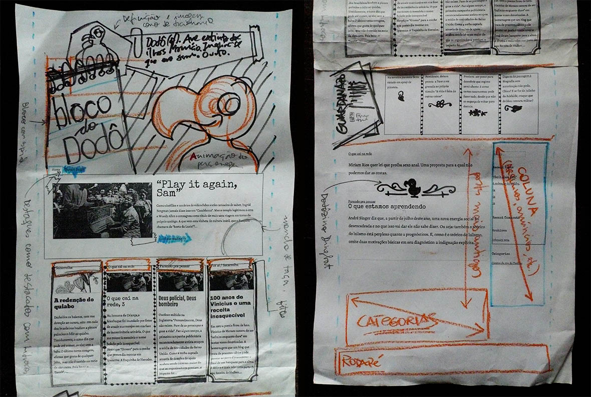

"No blog do Dodô"
A convite de uma amiga, participei da elaboração do blog "No blog do Dodô", do publicitário Evandro Barreto. Fiz layouts e o desenvolvimento front-end em WordPress.
Evandro mencionou várias referências que inspirariam o conteúdo do blog, e também se tornaram referências visuais, como o Pasquim e a revista Senhor. Dessa maneira, resgatei um pouco do espírito da diagramação paste-up, usando várias fontes, colagens com imagens e bordas antigas. O Letraset encontra o CSS.
Previamente, definimos quais seriam os conteúdos. Decidimos ter uma variedade de conteúdos, desde os curtíssimos "Contos da era do Twitter" até as seções "Guarda-chuva" e "Parando pra pensar", para textos mais longos que seriam exibidos em sua totalidade na home. Nessa etapa, focamos mais na arquitetura da informação e na programação. Foram necessários vários loops do WordPress para dar o ar de variedade que queríamos, puxando postagens por tags.
Assim como várias das histórias contadas por Evandro em seu blog, as reuniões de trabalho costumavam ser em um bar. Para agilizar, imprimíamos os layouts para poder esboçar em cima, comentar, marcar, riscar. Depois, brindávamos por mais uma reunião produtiva – e divertida.
